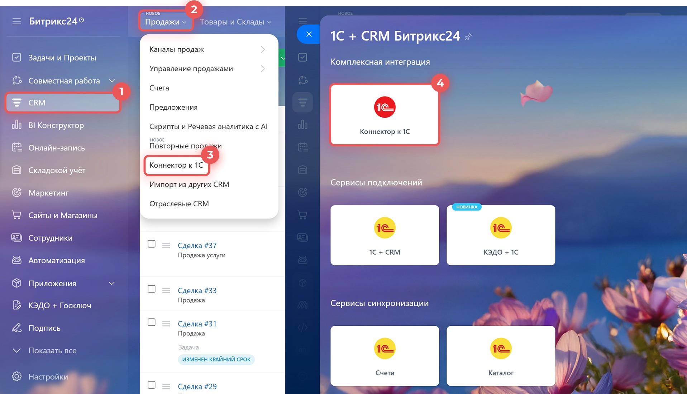
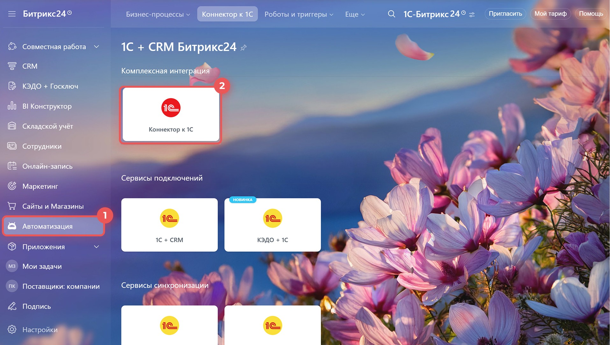
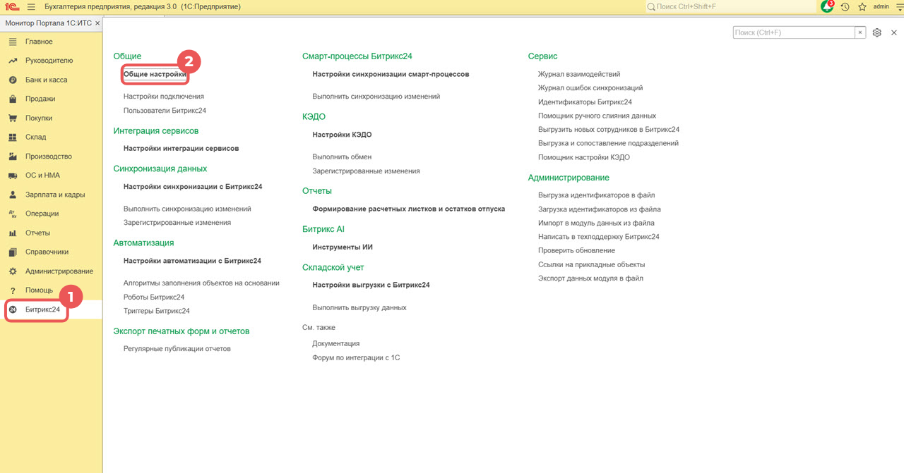
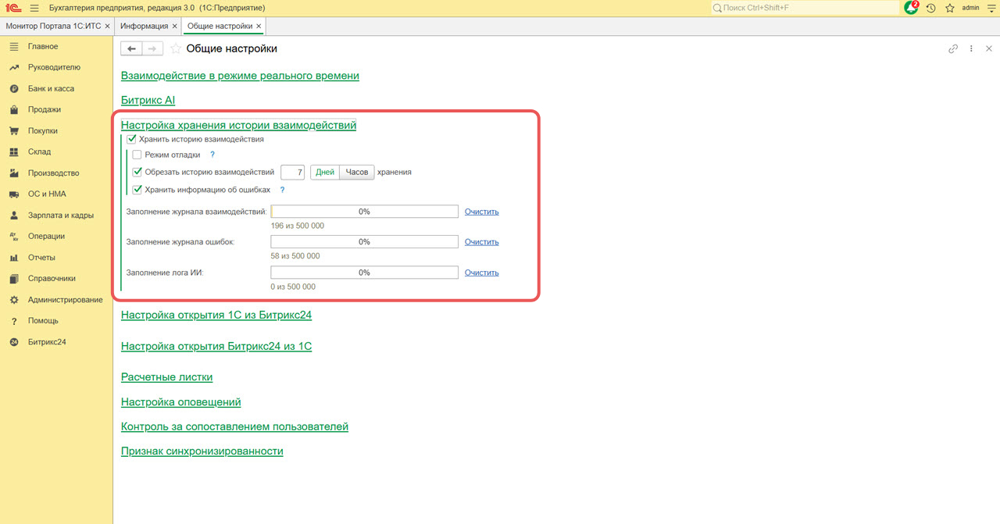

Интеграция Битрикс24 и 1С: штатный модуль или своя разработка
Классический запрос от бизнеса: «хотим, чтобы Битрикс24 и 1С работали как одна система» — без двойного ввода счетов, без ручной сверки остатков, без вопроса «а эта сумма точно оплачена?». У Битрикс24 для этого есть готовый штатный модуль. Но он поддерживает ограниченный список конфигураций 1С, а для белорусских редакций этот список совсем короткий. Разбираем, как работает штатная интеграция, что делать, если ваша конфигурация в список не попадает, и почему кастомная разработка — это не просто «дороже», а отдельный проект со своими рисками.
Что даёт связка Битрикс24 и 1С
Без интеграции компания обычно живёт в двух системах параллельно: менеджер ведёт сделку в Битрикс24, а бухгалтер или логист заново вбивает те же данные в 1С — контрагента, товары, суммы. Это не просто двойная работа, а источник ошибок: где-то забыли обновить остаток, где-то менеджер не знает, что счёт уже оплачен, и звонит клиенту с вопросом, который давно закрыт.
Интеграция убирает этот разрыв: сделки и счета из CRM попадают в 1С как документы, а из 1С в CRM возвращаются актуальные остатки, цены и статусы оплаты. Менеджер видит в карточке сделки, оплатил ли клиент счёт и что есть на складе, не открывая вторую программу и не спрашивая коллег.
Штатный модуль: «Коннектор к 1С»
У Битрикс24 есть готовое приложение от вендора — не нужно ничего программировать, если ваша конфигурация 1С входит в список поддерживаемых. Найти его можно в разделе CRM → Продажи → Коннектор к 1С или Автоматизация → Коннектор к 1С.

Внутри — не одно приложение, а несколько связанных сервисов: полноценная двусторонняя синхронизация данных, «1С:Бэкофис» для просмотра документов 1С прямо в карточке сделки, экспорт отчётов и печатных форм на телефон руководителя, автоматизация через роботов и триггеров, а для коробочной версии — ещё и обмен кадровыми данными.

 Контакты, компании, реквизиты и банковские счета
Контакты, компании, реквизиты и банковские счета- Сделки и счета (новые и старые), заказы, оплаты, отгрузки
- Товары и вариации, свойства, единицы измерения, цены и остатки
- Документы и печатные формы, справочники, отчёты 1С
- В реальном времени — изменение в 1С или Битрикс24 сразу запускает синхронизацию
- По расписанию — обмен происходит автоматически с заданной частотой
- Вручную — запускается из 1С, когда это нужно
- Работает и с облачной, и с коробочной версией Битрикс24
Какие конфигурации 1С поддерживает штатный модуль
Здесь и кроется главный нюанс. У штатного модуля два похожих, но разных приложения — «Коннектор к 1С» и «1С:Синхронизация» — и у каждого свой список поддерживаемых конфигураций по странам. Для России список из десятка редакций: ERP, «Управление торговлей», «Комплексная автоматизация» и другие. Для Беларуси официально поддерживаются только три.
| Конфигурация 1С для Беларуси | Коннектор к 1С 2.0 | 1С:Синхронизация |
|---|---|---|
| Управление компанией для Беларуси, ред. 1.6 | Поддерживается | Поддерживается |
| Бухгалтерия для Беларуси, ред. 2.1 | Поддерживается | Поддерживается |
| Управление торговлей для Беларуси, ред. 3.4 | Поддерживается | Поддерживается |
| Всё остальное — старые редакции, версия 7.7, сильно доработанные «под себя» конфигурации, отраслевые решения на базе 1С | Не поддерживается | Не поддерживается |
Три редакции — это заметно меньше, чем у российского списка, и это не ошибка вендора, а объективная особенность: белорусские редакции 1С не такие массовые, и не под каждую разработчики модуля пишут отдельную поддержку. Дополнительно каждая конфигурация обменивается по-своему: например, «Бухгалтерия для Беларуси» синхронизирует в основном счета, а «Управление торговлей для Беларуси» — ещё и сделки, заказы, товары и остатки. Полный список возможностей стоит сверять непосредственно перед подключением, а не полагаться на общее название модуля.
«Первый вопрос, который мы задаём клиенту с запросом на интеграцию с 1С, — не „что вы хотите синхронизировать“, а „какая у вас редакция и стандартная ли она“. От ответа зависит, займёт это два часа с готовым модулем или отдельный проект». Команда «АйТи Аналитикс»

Если конфигурации нет в списке: кастомная интеграция
Ситуация встречается часто: компания годами дорабатывала свою 1С «под себя», использует старую версию 7.7 или отраслевое решение, которого нет ни в одном официальном списке. Штатный модуль здесь просто не подключится — не потому что «руки не дошли настроить», а потому что вендор не поддерживает эту конфигурацию в принципе.
Выход — разработать обмен данными индивидуально: программист пишет код, который через REST API Битрикс24 и веб-сервисы или обработки 1С передаёт нужные документы в обе стороны. Гибкость здесь максимальная — можно синхронизировать ровно то, что нужно, и по любой логике, вплоть до уникальных бизнес-правил конкретной компании. Но это уже не готовая коробка от вендора, а полноценная разработка: с техническим заданием, тестированием и, что важнее всего, дальнейшей поддержкой.
Чем опасна кастомная разработка интеграции
Кастомная интеграция — рабочий и часто единственный вариант. Но у неё принципиально другая природа рисков, чем у штатного модуля, и клиенту стоит понимать это на берегу, а не постфактум.
- За модуль отвечает вендор — он же его развивает и чинит при выходе новых версий 1С и Битрикс24
- Есть документация, техподдержка и понятная процедура обновления
- Встроенный журнал ошибок и уведомления о сбоях синхронизации — из коробки
- Стоимость предсказуема: подписка или разовая настройка
- Поддержку и развитие обеспечивает конкретный разработчик или подрядчик — вендор ответственности не несёт
- Обновление 1С или Битрикс24 может незаметно сломать обмен — без предупреждения от вендора, ведь для него этой интеграции «официально не существует»
- Журнал ошибок, уведомления, откат при сбое — всё это нужно закладывать в разработку отдельно, иначе их просто не будет
- Стоимость и сроки — это оценка проекта, а не прайс на подписку

Отдельно стоит сказать про самый неприятный сценарий — зависимость от одного разработчика. Если интеграцию писал один программист или небольшая команда без внятной документации, а через год-два этот человек стал недоступен (уволился, сменил профиль, компания-подрядчик закрылась), разобраться в чужом коде и безопасно его поддерживать — задача не быстрая и не дешёвая. У штатного модуля такой проблемы нет в принципе: за ним стоит вендор, а не один человек.
Есть и более практичный риск — безопасность. Обмен с 1С обычно означает открытый веб-сервис с доступом к бухгалтерской базе. Если его настроили наспех — без HTTPS, с общим паролем администратора вместо отдельной учётной записи для обмена, без ограничения по IP — это готовая дыра в периметре компании. У штатного модуля такие вещи проверены вендором на тысячах внедрений; у самописного решения качество защиты равно квалификации конкретного исполнителя.
Когда кастомная разработка действительно оправдана
- Конфигурация 1С не входит в список поддерживаемых, а перейти на другую редакцию бизнес не готов
- Нужна синхронизация по нетиповой бизнес-логике, которую штатный модуль не покрывает даже частично
- Компания уже большая, готова содержать выделенного разработчика или подрядчика на постоянной основе
- Достаточно синхронизировать 1–2 объекта (например, только счета), а не полный двусторонний обмен — тогда риски и стоимость кастома соразмерны задаче
- Есть готовность зафиксировать зону ответственности и договор на поддержку, а не разовую разработку «и забыли»
- Прежде чем писать своё, стоит проверить готовые решения на Битрикс24.Маркет — часто под нестандартный случай уже есть чужой модуль
Что входит в интеграцию Битрикс24 и 1С
Проверка конфигурации
Смотрим точную редакцию и версию 1С, узнаём в 1С через «О программе», и насколько сильно она доработана относительно типовой — от этого зависит весь дальнейший план.
Выбор способа
Если конфигурация поддерживается — подключаем штатный «Коннектор к 1С» или «1С:Синхронизацию». Если нет — честно проговариваем объём, сроки и стоимость кастомной разработки до старта, а не по факту.
Настройка обмена
Сопоставляем справочники и поля, выбираем режим обмена — реальное время, расписание или вручную — под нагрузку и реальную потребность бизнеса.
Безопасность подключения
Отдельная учётная запись для обмена, HTTPS, ограничение доступа — вне зависимости от того, штатный модуль это или кастомная разработка.
Тест на копии базы
Прогоняем реальные сценарии — новую сделку, оплату, изменение остатка — на тестовой базе 1С, прежде чем включать обмен на боевых данных.
Документация и сопровождение
Для кастомных решений отдельно фиксируем логику обмена в документации — чтобы интеграция не зависела от памяти одного человека.
Разберёмся, что подходит именно вам
Проверим вашу конфигурацию 1С, скажем честно — хватит штатного модуля или нужна разработка — и посчитаем реальные сроки и стоимость.